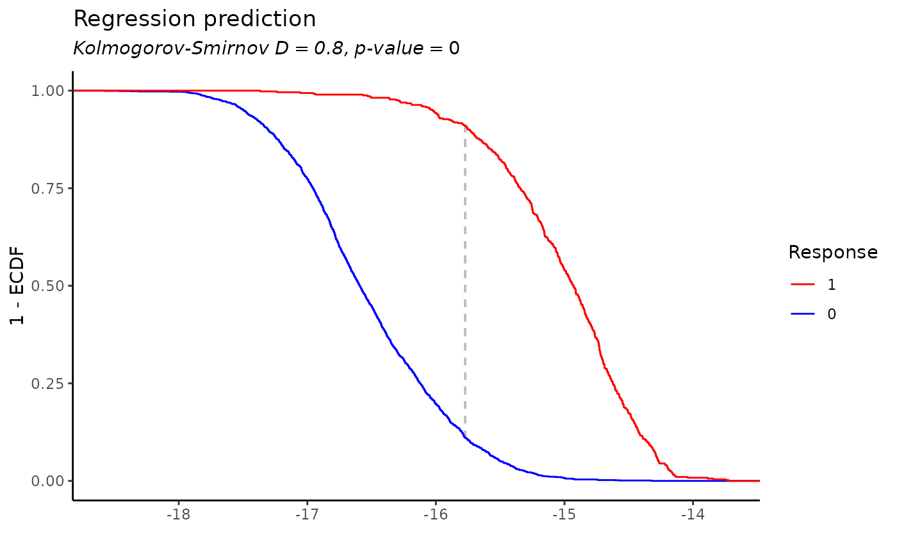
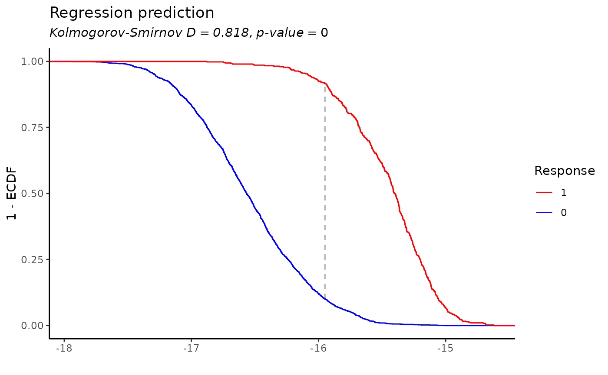

Cross-validate a two-phase regression model
regress_pwm.cv.RdPerform cross-validation on a two-phase regression model. You can either provide explicit folds, or use the nfolds argument to set the number of folds. If the response is binary (0 and 1) or a categories vector is given, the folds would be stratified by the response/categories.
Usage
regress_pwm.cv(
sequences,
response,
nfolds = NULL,
metric = NULL,
folds = NULL,
categories = NULL,
two_phase = TRUE,
seed = 60427,
parallel = getOption("prego.parallel"),
add_full_model = TRUE,
...
)Arguments
- sequences
A vector of DNA sequences ('A', 'T', 'C' or 'G'. Will go through
toupper)- response
A matrix of response variables - number of rows should equal the number of sequences
- nfolds
number of folds for cross-validation. Can be NULL if
foldsare provided.- metric
metric to use for cross-validation. One of 'ks' or 'r2'. If NULL - 'ks' would be set for binary response and 'r2' for continuous response.
- folds
vector of fold numbers for each sequence (optional)
- categories
vector of categories for each sequence (optional)
- two_phase
whether to use two-phase optimization or not.
- seed
random seed
- parallel
whether to run the cross-validation in parallel.
- add_full_model
whether to add the full model (without cross-validation) to the results.
Value
a list with the following elements:
cv_models: a list of models, one for each fold.
cv_pred: a vector of predictions for each sequence.
score: score of the model on the cross-validated predictions.
cv_scores: a vector of scores for each fold.
folds: a vector with the fold number for each sequence.
full_model: The full model (without cross-validation), if
add_full_modelis TRUE.
Examples
res <- regress_pwm.cv(cluster_sequences_example, cluster_mat_example[, 1], nfolds = 5, two_phase = TRUE, two_phase_sample_frac = c(0.1, 1))
#> ℹ Stratified sampling
#> ℹ Response is binary: setting metric to "ks"
#> ℹ Using two-phase optimization
#> ✔ Cross-validation score: 0.800231665948154
#> ℹ Performing two phase optimization
#>
#> ── First phase ──
#>
#> ℹ Sampling 0.1 and 1 of the dataset for the first phase
#> ℹ Stratified sampling
#> ℹ sampled 187 0s and 492 1s
#>
#> ── Generate candidate kmers
#>
■■■■■■■■■■■■■■■■■■■■■■■■■■■ 88% | ETA: 0s
#>
#>
#> ── Regress each candidate kmer on sampled data
#> ℹ Running regression on 15 candidate kmers
#> → "AAT*ATT", score: 0.543857765944515
#> → "GTTAA", score: 0.559869865388793
#>
■■■■■ 13% | ETA: 21s
#>
#> → "TTAAT", score: 0.555580173344022
#> ■■■■■ 13% | ETA: 21s
#>
#> → "GT*AAT", score: 0.545262699076249
#> ■■■■■ 13% | ETA: 21s
#>
■■■■■■■■■ 27% | ETA: 16s
#>
#> → "GTTAAT", score: 0.560946041669412
#> ■■■■■■■■■ 27% | ETA: 16s
#>
■■■■■■■■■■■ 33% | ETA: 14s
#>
#> → "CTTATC", score: 0.151711180054944
#> ■■■■■■■■■■■ 33% | ETA: 14s
#>
■■■■■■■■■■■■■ 40% | ETA: 12s
#>
#> → "TAAT*AT", score: 0.56209422911021
#> ■■■■■■■■■■■■■ 40% | ETA: 12s
#>
■■■■■■■■■■■■■■■ 47% | ETA: 11s
#>
#> → "CTTATCT", score: 0.158662742723064
#> ■■■■■■■■■■■■■■■ 47% | ETA: 11s
#>
■■■■■■■■■■■■■■■■■ 53% | ETA: 10s
#>
#> → "TCTTATC", score: 0.150810938356088
#> ■■■■■■■■■■■■■■■■■ 53% | ETA: 10s
#>
■■■■■■■■■■■■■■■■■■■ 60% | ETA: 8s
#>
#> → "AAT*ATTA", score: 0.572837809679498
#> ■■■■■■■■■■■■■■■■■■■ 60% | ETA: 8s
#>
■■■■■■■■■■■■■■■■■■■■■ 67% | ETA: 7s
#>
#> → "TAAT*ATT", score: 0.571376333083161
#> ■■■■■■■■■■■■■■■■■■■■■ 67% | ETA: 7s
#>
■■■■■■■■■■■■■■■■■■■■■■■ 73% | ETA: 6s
#>
#> → "TAATCATT", score: 0.557645279955876
#> ■■■■■■■■■■■■■■■■■■■■■■■ 73% | ETA: 6s
#>
■■■■■■■■■■■■■■■■■■■■■■■■■ 80% | ETA: 4s
#>
#> → "AAGATAAC", score: 0.119153655041005
#> ■■■■■■■■■■■■■■■■■■■■■■■■■ 80% | ETA: 4s
#>
■■■■■■■■■■■■■■■■■■■■■■■■■■■ 87% | ETA: 3s
#>
#> → "AAT*ATTAA", score: 0.577939719038964
#> ■■■■■■■■■■■■■■■■■■■■■■■■■■■ 87% | ETA: 3s
#>
■■■■■■■■■■■■■■■■■■■■■■■■■■■■■ 93% | ETA: 1s
#>
#> → "TTAAT*ATT", score: 0.577939810354334
#> ■■■■■■■■■■■■■■■■■■■■■■■■■■■■■ 93% | ETA: 1s
#>
#> ℹ Best motif in the first phase: "***TTAAT*ATT***", score: 0.577939810354334
#>
#> ── Phase 2: Running regression on the full dataset ──
#>
#> ℹ Number of response variables: 1
#> ℹ Initializing regression with pre-computed PSSM
#> ℹ Running regression
#> • Motif length: 15
#> • Bidirectional: TRUE
#> • Spat min: 0
#> • Spat max: 300
#> • Spat bin: 50
#> • Improve epsilon: 0.0001
#> • Min nuc prob: 0.001
#> • Uniform prior: 0.05
#> • Score metric: "r2"
#> • Seed: 60427
#> ✔ Finished running regression. Consensus: "T*A***W*T"
#> ✔ KS test D: 0.83, p-value: 0
res$score
#> D
#> 0.8002317
res$cv_scores
#> fold1.D fold2.D fold3.D fold4.D fold5.D
#> 0.7979798 0.8220440 0.8454615 0.8320567 0.7639109
plot(res$cv_pred, res$full_model$pred, xlab = "CV predictions", ylab = "Full model predictions", cex = 0.1)
plot_regression_prediction_binary(res$cv_pred, cluster_mat_example[, 1])

plot_regression_prediction_binary(res$full_model$pred, cluster_mat_example[, 1])

# single phase
res <- regress_pwm.cv(cluster_sequences_example, cluster_mat_example[, 1], nfolds = 5, two_phase = FALSE)
#> ℹ Stratified sampling
#> ℹ Response is binary: setting metric to "ks"
#> ℹ Using single-phase optimization
#> ✔ Cross-validation score: 0.787515077882434
#> ℹ Number of response variables: 1
#> ℹ Screening for kmers in order to initialize regression
#> ℹ Number of response variables: 1
#> ℹ Screening kmers of length 8, from position 0 to position 300
#> ℹ minimal correlation: 0.08, minimal number of occurrences: 50
#> ✔ Found 198 kmers in 2359 sequences.
#> ℹ Motif is shorter than 15, extending with wildcards
#> ℹ Initializing regression with the following motif: "***TAATCATT****"
#> ℹ Running regression
#> • Motif length: 15
#> • Bidirectional: TRUE
#> • Spat min: 0
#> • Spat max: 300
#> • Spat bin: 50
#> • Improve epsilon: 0.0001
#> • Min nuc prob: 0.001
#> • Uniform prior: 0.05
#> • Score metric: "r2"
#> • Seed: 60427
#> ✔ Finished running regression. Consensus: "TA***AKT"
#> ✔ KS test D: 0.81, p-value: 0
res$score
#> D
#> 0.7875151
res$cv_scores
#> fold1.D fold2.D fold3.D fold4.D fold5.D
#> 0.8009507 0.7938206 0.8164907 0.8132899 0.7606281
plot(res$cv_pred, res$full_model$pred, xlab = "CV predictions", ylab = "Full model predictions", cex = 0.1)